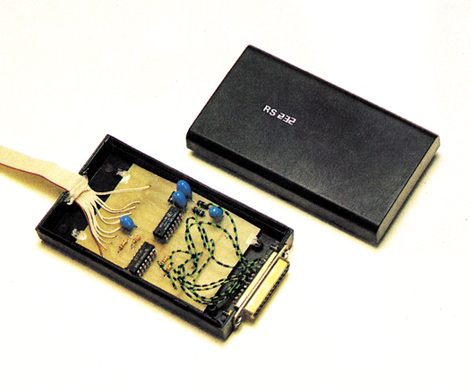
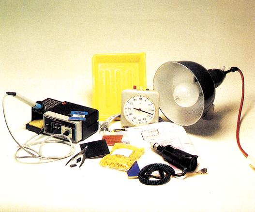
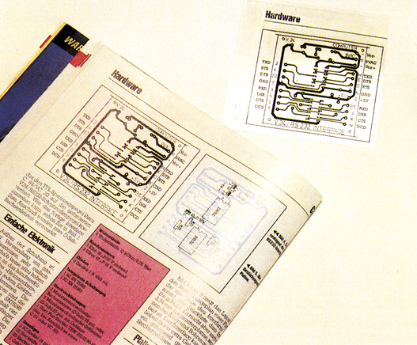
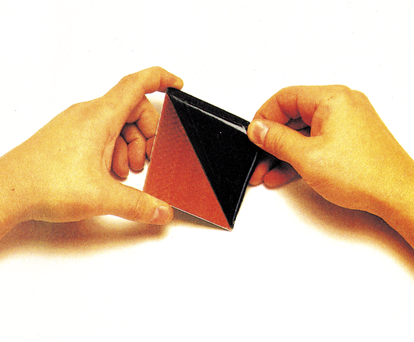
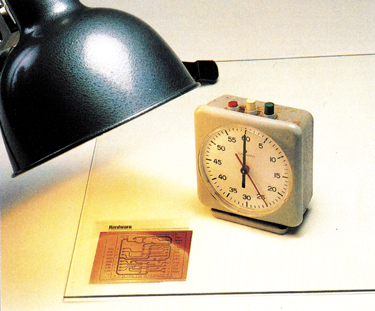
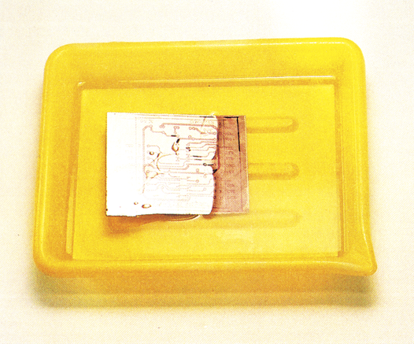
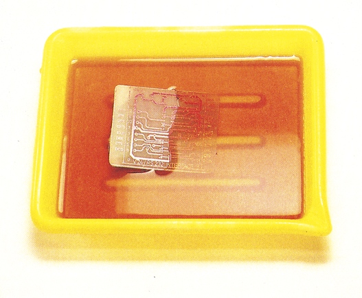
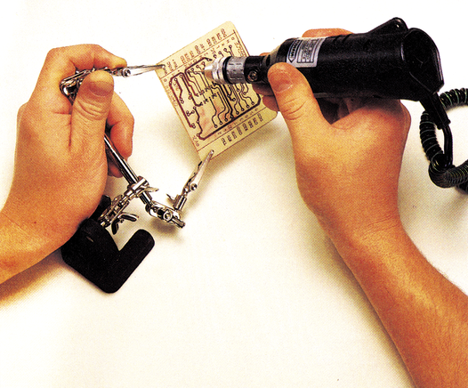
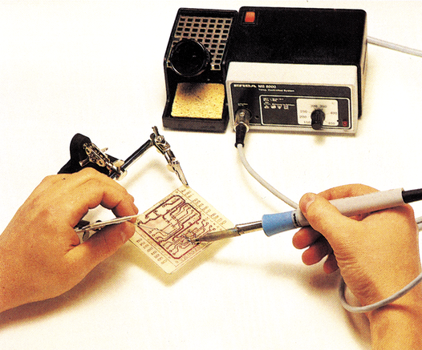

Platinenätzen leichtgemacht
Wir zeigen Ihnen, wie man Platinen leicht selbst herstellen kann. Wie kommt eine Kopie der Leiterbahnen aus einer Zeitschrift auf das Kupfer der Platine? Anschließend finden Sie einige Tips zum Löten. Selbst wenn Sie noch nie einen Lötkolben in der Hand hatten: Es ist einfacher als Sie denken.
Viele Leser fragten uns, wie sie denn die Platinenlayout-Vorschläge aus dem 64’er auf eine Platine übertragen können. Wir wollen Ihnen deshalb an einem einfachen Beispiel einmal zeigen, wie eine Platine geätzt wird. Als Beispiel soll das RS232-Interface aus Ausgabe 3/85 dienen (Bild 1). Denn die Herstellung einer Platine zu dieser Schaltung kann auch vom Anfänger in Sachen Platinenätzen bewältigt werden.

Bevor Sie nun ans Werk gehen, einiges zur Theorie. Eine Platine besteht aus einem Trägermaterial, das der ganzen Platte die mechanische Festigkeit gibt. Als Trägermaterial findet Pertinax (Hartpapier) oder Epoxid-Harz Verwendung. Beide Materialien sind sehr schlechte elektrische Leiter. Auf dem Trägermaterial ist eine Schicht aus Kupfer aufgebracht, die so geätzt wird, daß nur noch die Leiterbahnen zur Verbindung der Bauteile untereinander übrig bleiben. Bei umfangreichen Schaltungen verwendet man »doppelt-kaschierte« Platinen. Hier ist auf der Ober- und der Unterseite der Platine eine Kupferschicht. Man kann damit prinzipiell zwei Platinen auf dem gleichen Träger herstellen. Die Herstellung von doppelseitigen Platinen ist allerdings eine Sache für ausgebuffte Profis.
Epoxidharz hat als Trägermaterial bessere Eigenschaften als Pertinax. Es ist verwindungssteifer und läßt sich exakter bohren. Leider ist es deutlich teuerer als Pertinax.
Bei einer Variante der käuflichen Platinen ist auf das Kupfer noch eine Schicht aus lichtempfindlichen Lack aufgetragen, der das Kupfer vor dem Ätzmittel schützt. Die Lackschicht wird durch eine dicke schwarze Adhäsionsfolie vor Lichteinwirkung geschützt. Setzt man den Photolack UV-Licht (Höhensonne) aus, verändert er seine Struktur so, daß er sich in Natronlauge auflöst.
Für ganz Neugierige erst ein kurzer Überblick über den Werdegang einer Platine: Durch Belichten und anschließendes Entwickeln der Platine bleiben die späteren Leiterbahnen vom Photolack bedeckt. Nach dem Entwickeln wird das freie Kupfer, das nicht mehr vom Lack geschützt wird, weggeätzt. Lediglich die unbelichteten Kupferstellen bleiben stehen. Danach müssen nur noch die Löcher für die Bauteile gebohrt und die Bauteile verlötet werden. Für die Herstellung einer Platine sind ein paar Dinge unverzichtbar (Bild 2). Man kann sie in jedem Elektronikgeschäft bekommen. Im einzelnen:

- Einseitig beschichtete photopositiv oder negativ Qe nach Verfahren) beschichtete Platine
- Folie zum Übertragen des Layouts (Klebetechnik oder Color Key)
- Eine Metallsäge und mittelgrobe Feile
- Ein Tütchen Entwickler (meist Ätznatron)
- Eine Tüte Ätzmittel (am besten Eisen-III-chlorid)
- Zwei Plastikschalen (größer als Platine!)
- Eine dünne Glasscheibe (größer als Platine!)
- Eine UV-Lampe (notfalls auch Nitraphot 500W)
- Eine Plastikklammer
- Bohrer 1 mm und Bohrmaschine
- Lötkolben (maximal 30 Watt)
- Einen kleinen Seitenschneider
- Elektroniklot
- Natürlich die Bauteile
Um ein Platinenlayout aus dem 64’er-Magazin auf die Platine zu übertragen, gibt es mehrere Verfahren.
Das erste, das Profis sicherlich bekannt ist, heißt »Color Key«. Hier wird eine spezielle Folie auf das Platinenlayout gelegt und mit UV-Licht belichtet. Der Witz dabei ist, daß die Folie nur auf das Licht anspricht, das vom Papier reflektiert wird und nicht auf das Licht der Lampe. Nach dem Entwickeln hat man eine negative Kopie des Layouts auf Klarsichtfilm, die sich leicht auf eine photonegativ (!) beschichtete Platine übertragen läßt. Hat man photopositiv beschichtete Platinen, muß der Film umkopiert werden. Das heißt, das ganze Spielchen noch mal von vorne. Nur diesmal mit der negativen Kopie als Vorlage. Der Nachteil dieses Verfahrens soll nicht verschwiegen werden: Eine etwa DIN-A4-große Folie kostet acht Mark und 100 ml Entwickler etwa noch mal das gleiche. Hat man noch keine Routine im Color Key-Verfahren, sollte man sich erst mit kleinen Probestreifen, die nicht auf Platine übertragen werden, einarbeiten. Der Vorteil von Color Key ist, daß die Rückseite des Originalplatinenlayouts ruhig bedruckt sein kann.
Color Key und Klebetechnik
Der Anfänger, der sich sowieso nur auf einfache Platinenlayouts beschränken wird, kann das Platinenlayout natürlich auch abzeichnen. Mit normaler Tusche und Zeichenfolie ist das allerdings ein fast aussichtsloses Vorhaben. Erstens verschmiert die Tusche leicht und zweitens ist die Tusche erst nach dem zweiten oder gar dritten Auftrag genügend lichtdicht. Es gibt aber Selbstklebesymbole (Letraset-Verfahren, Abreibe-Buchstaben) die leicht auf eine feste Klarsichtfolie übertragen (abgerubbelt) werden können. Mit diesen Symbolen hat man schnell die Lötaugen für IC-Sockel etc. auf der Folie. Man braucht ja nur die Folie auf die Vorlage legen und diese »nachkleben«. Sehr gut eignen sich Folien für Overhead-Projektoren, die es in den meisten Schreibwarengeschäften gibt. Für Leiterbahnen gibt es Selbstklebebänder auf Rollen. Mit einem kleinen Universalmesser kann das Band leicht auf die passende Länge geschnitten werden. Die Bänder können auch in Kurven verklebt werden. Einfache Layouts sind mit dieser Methode schnell, leicht und sicher herzustellen.
Haben Sie eine Kopie des Platinenlayouts auf Klarsichtfolie (Bild 3), können Sie Ihr handwerkliches Geschick unter Beweis stellen. Das gekaufte Stück Platine muß nämlich auf die Größe der Vorlage gebracht werden. Dazu nehmen Sie eine scharfe Metallsäge. Beim Sägen sollte die Kupferseite der Platine oben liegen. So vermeidet man ein allzu starkes Ausreißen an der Schnittkante. Die Sägekanten lassen sich mit einer Feile schnell entgraten. Achtung! Die Lackschicht darf keine Kratzer bekommen. Denn ungewünschte Leiterbahnunterbrechungen sind die Folge.

Jetzt haben Sie den lästigen Teil der Platinenherstellung hinter sich. Bei dem, was jetzt kommt, ist es besonders wichtig, alles bei der Hand zu haben. Fangen wir mit dem Aufbau für die Belichtung an. Sie benötigen eine ebene Unterlage, über der in 30 cm Abstand die Lampe hängt. Entfernen Sie jetzt die schwarze Schutzfolie vom abgesägten Stück Platine (Bild 4) und legen Sie die Klarsichtfolie seitenrichtig auf die beschichtete Kupferseite (Schrift auf dem Layout muß lesbar sein). Mit einer sauberen Glasscheibe wird die Folie auf die Platine gepreßt. Nun können Sie die Platine mit der darüberhängenden Lampe belichten (Bild 5). Die Belichtungszeit hängt stark davon ab, wie groß der Abstand Lampe — Platine ist und aus welcher Glassorte die Glasplatte besteht etc. In der Regel liegt die Belichtungszeit aber bei etwa 12 bis 15 Minuten. Viel schneller geht es, wenn statt einer Nitraphotlampe ein richtiger UV-Brenner (Höhensonne) verwendet wird. Da die UV-Brenner aber schwer zu beschaffen und teuer sind, möchten wir auf diese Art der Belichtung nicht eingehen. Am besten, Sie sägen kleine Platinenstücke ab und machen ein paar Probebelichtungen, die Sie entwickeln und ätzen. Die einmal ermittelte Zeit paßt dann für alle folgenden Belichtungen, solange Sie die gleiche Lampe im gleichen Abstand zur Glasplatte und Vorlage nehmen. Besorgen Sie sich auf jeden Fall eine passende Fassung für die verwendete Birne. Denn eine 500-W-Birne darf keinesfalls in einer Schreibtischleuchte betrieben werden!


Während die Belichtung läuft, können Sie den Entwickler ansetzen. Lösen Sie dazu den Inhalt des Entwicklerpäckchens in der angegebenen Menge Wasser (meist 1 Liter) auf. Die Lösung können Sie aufbewahren und für mehrere Platinen verwenden. Nehmen Sie zur Aufbewahrung aber keine Limo- oder andere Getränkeflaschen, denn der Entwickler ist giftig und ätzend.
Ist die Belichtungszeit vorüber (Stoppuhr), entfernen Sie die Glasplatte und die Klarsichtfolie. Sie können schon ganz schwach die Leiterbahnen auf der Platine erkennen. Fassen Sie nun die Platine an einer Ecke mit einer Wäscheklammer an und bringen Sie die Platine, mit der Schichtseite nach oben, in den Entwickler. Dann sollten Sie die Platine wieder loslassen. Während des Entwickelns und Ätzens sollte die Arbeitsunterlage mit einer dicken Lage Zeitungspapier abgedeckt werden. Selbst zieht man sicherheitshalber einen alten Kittel oder Schürze an. So lassen sich Flecken vermeiden.
Das Entwickeln dauert nur wenige Sekunden. Das Ende erkennt man daran, daß an den belichteten Stellen das blanke Kupfer zu sehen ist (Bild 6). Während des Entwickelns empfiehlt es sich, die Plastikschale zu schwenken oder leicht zu kippen (Vorsicht, Spritzer!). So erreicht man, daß der abgelöste Lack von der Platine gewaschen wird und man jederzeit erkennen kann, wie weit die Entwicklung fortgeschritten ist. Nach der Entwicklungwird die Platine unter kaltem, fließendem Wasser abgeduscht und somit fixiert. Ab jetzt darf die Platine auf keinen Fall mehr mit den Fingern angefaßt werden. Es kann nämlich sonst passieren, daß das Kupfer durch Fett, das am Kupfer haftet, nicht sauber weggeätzt wird.

Jetzt können Sie den Entwickler ansetzen. Lösen Sie dazu den Inhalt des Ätzmittelpäckchens in der angegebenen Wassermenge. Eine Faustregel besagt, daß in einem Liter Wasser etwa 200 Gramm Eisen-III-chlorid gelöst werden sollten. Das Wasser sollte etwa 40 bis 50 Grad warm sein. So löst sich das Salz schneller auf und auch die Entwicklung geht zügiger.
Machen Sie das Wasser aber auf keinen Fall heißer, denn sonst entweicht das stechend riechende und giftige Gas Chlor. Da während des Ätzvorganges auch immer etwas Chlor frei wird, sollten Sie für eine gute Lüftung Ihres Arbeitsplatzes sorgen. Statt Eisen-III-chlorid wird häufig auch Ammoniumpersulfat verwendet.
Hüten sollten Sie sich allerdings vor einer Mischung, die gerne von Profis angesetzt wird: 9 Teile Salzsäure und 1 Teil Wasserstoffperoxid. Dieses Ätzbad setzt dermaßen viel Chlor frei und ist so aggressiv, daß man die Finger davon lassen sollte.
Bringen Sie nun, wie beim Entwickeln, die Platine wieder in das Ätzbad und kippen Sie die Schale ab und zu etwas auf und ab (Bild 7). So wird der Ätzvorgang beschleunigt. Nach etwa 5 bis 10 Minuten ist der Ätzvorgang beendet. Das vorher blanke Kupfer ist restlos von der Platine entfernt. Spülen Sie die Platine wieder unter Wasser ab und trocknen Sie sie mit etwas saugfähigem Papier. Den restlichen Photolack sollte man zum Schutz des Kupfers vor Oxidation stehen lassen. Wer den Lack trotzdem entfernen möchte, kann die Platine mit Aceton abwischen.

Der chemische Teil ist nun abgeschlossen. Jetzt wird es wieder mechanisch: Es müssen die Löcher für die Bauteile gebohrt werden. Dazu brauchen Sie eine Bohrmaschine und einen Bohrer mit 1 mm Durchmesser. Ob Sie nun eine Minibohrmaschine wie auf dem Foto verwenden, oder eine Bohrmaschine in einem Bohrständer, bleibt Ihnen überlassen. Mit der Minibohrmaschine hat man etwas mehr Gefühl. Die kleinen Bohrer brechen deshalb nicht so schnell ab. Vor allem dann, wenn man einen Bohrständer zu einer solchen Miniatur-Bohrmaschine sein eigen nennen darf.
Die Löcher bohrt man von der beschichteten Seite aus. Am besten mit einem alten Holzbrett als Unterlage. Nach dem Bohren wird eine Sichtkontrolle vorgenommen, bei der man die Platine auf feine Leiterbahnunterbrechungen und Überbrückungen hin prüfen sollte. Unterbrechungen können mit einem kleinen Drahtstück geflickt und Brücken mit einem Schraubendreher weggekratzt werden.
Hat man alle Bauteile zur Hand, kann gleich mit dem Bestücken und dem Löten begonnen werden. Aber auch hier gibt es einige Grundregeln zu beachten, die das Arbeiten erleichtern und helfen, Fehler und Ausfälle zu vermeiden. Da ist zum einen die Reihenfolge, in der die Bauteile eingelötet werden. In der Regel wird mit nicht elektronischen Bauteilen wie Sockeln und Drahtbrücken begonnen. Danach kommen die passiven Bauelemente, Widerstände, Kondensatoren, Dioden etc. an die Reihe und zum Schluß die aktiven Elemente, wie Transistoren und ICs. Man sollte sich angewöhnen, alle ICs zu sockeln. Das kostet vielleicht ein paar Mark mehr, aber man tut sich um vieles leichter, sollte einmal ein Baustein ausgewechselt werden.
Zum Löten selbst sollte man berücksichtigen, daß ein Lötkolben mit 30 Watt das Äußerste ist, was Platinen und Bauteile vertragen. Wenn die Kupferkaschierung nämlich zu heiß wird, löst sie sich ab und die Platine wird unbrauchbar. Auch die Bauteile sollten immer nur kurze Zeit in Berührung mit dem Lötkolben sein, damit sie nicht überhitzt werden. Bei Transistoren, Dioden und vor allem bei LEDs sollte die Lötwärme immer mit einer kleiner Zange oder Pinzette vor dem eigentlichen Bauteil abgeführt werden.

So wird gelötet
Als Regel sollten Sie beherzigen, daß ein heißer Lötkolben allen Bauteilen wesentlich zuträglicher ist als ein gerade aufgeheizter, mit dem man lange braten muß, bevor das Lot schmilzt.
Als Lötzinn ist ausschließlich Elektroniklot mit einem Durchmesser von maximal 1 mm geeignet. Dieses Lot hat eine Seele aus Kolophonium, das beim Schmelzen ein Oxidieren des Lots und Kupfers verhindert und als Flußmittel dient.
Am einfachsten geht das Löten, wenn der Lötkolben eine zunderfreie Spitze hat. Oxidationsreste lassen sich bei dieser Sorte leicht mit einem Stück altem Baumwollstoff abwischen. Salmiaksteine und Lötwasser sind Dinge, die zum Platinenlöten keinesfalls hergenommen werden dürfen.
Doch genug der Theorie. Stecken Sie die Bauteile auf die Platine und biegen Sie die Beine leicht schräg zur Seite ab. So verhindern Sie, daß die Bauteile aus den Löchern herausrutschen, wenn Sie die Platine zum Löten herumdrehen.
Beim Bestücken und Löten ist eine sogenannte »dritte Hand« von großem Vorteil (Bild 9). Man hat eine Hand für den Lötkolben und eine für das Lot frei. Wenn nun der Lötkolben richtig heiß ist, wird ein Bauteil-Beinchen mit der Spitze erwärmt. Und zwar so, daß die Spitze des Lötkolbens auch den Kupferring um die Bohrung erreicht. Gleichzeitig bringt man etwas Lot an die Lötstelle. Sobald sich das Lot gleichmäßig über die gesamte Lötstelle verteilt hat, wird der Lötkolben entfernt. Während des Abkühlens darf die Lötstelle nicht bewegt oder erschüttert werden, sonst kommt es zu einer »kalten« Lötstelle, die nachgelötet werden muß. Eine »kalte« Lötstelle erkennt man an ihrer matten, kristallartigen Oberfläche. Sie hat die unangenehme Eigenschaft, den Strom nur dann zu leiten, wenn es ihr paßt.

Nach dem Löten werden die abstehenden Drähte knapp über den Lötpunkten mit einem kleinen Seitenschneider abgezwickt. Die Vertiefung im Seitenschneider muß von der Platine wegzeigen, damit der Scherdruck nicht auf die Lötstelle geht.
Sind alle Bauteile eingelötet, ist noch mal eine Sichtkontrolle angesagt. Es kann nämlich leicht vorkommen, daß sich haarfeine Lötbrücken gebildet haben. Das geschieht meist bei eng beieinander liegenden Lötstellen, wie es zum Beispiel bei IC-Sockeln der Fall ist. Eine sorgfältige Kontrolle kann eine spätere, langwierige Fehlersuche ersparen.
Ist die Platine komplett fertig, sollte sie in ein Gehäuse eingebaut werden. Das erspart Kurzschlüsse und das Abbrechen von Bauteilen und sieht vor allem professioneller aus. Plastikgehäuse sind sehr leicht zu bearbeiten und billig.
Sowohl beim Platinenätzen als auch beim Löten gilt die Regel, daß noch kein Meister vom Himmel gefallen ist. Erst Übung macht den Meister.
Sollte Sie dieser Beitrag zu ersten Lötversuchen angestiftet haben, können Sie sich ein paar Lochrasterplatinen besorgen, in die Sie irgendwelche Drähte einlöten. Wenn Sie genug Erfahrung haben (geht ganz schnell!), können Sie sich ans Bestücken von Platinen wagen.
Literatur zu diesem Thema findet man in den meisten Elektronik-Läden. Aber auch zu den Produkten bekommt man gute Tips.
(Udo Reetz/hm)